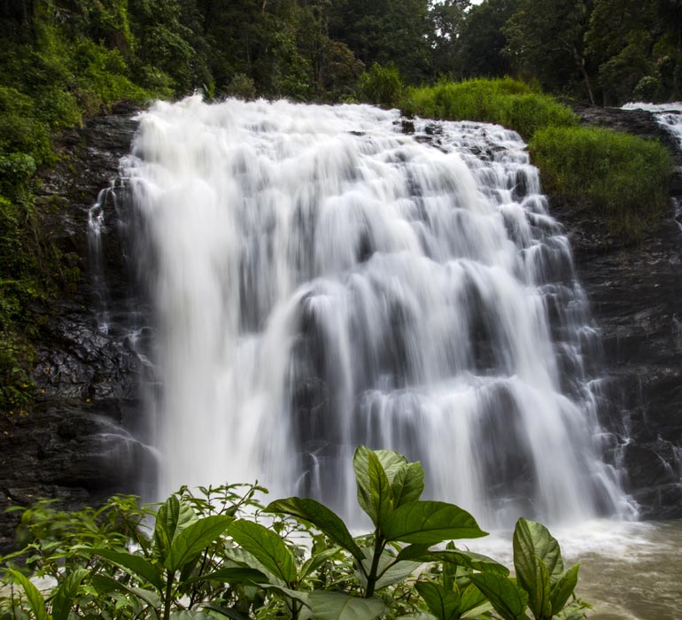
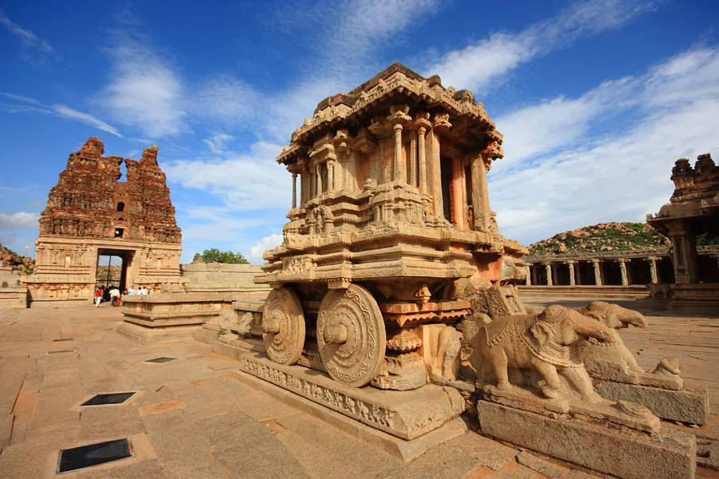
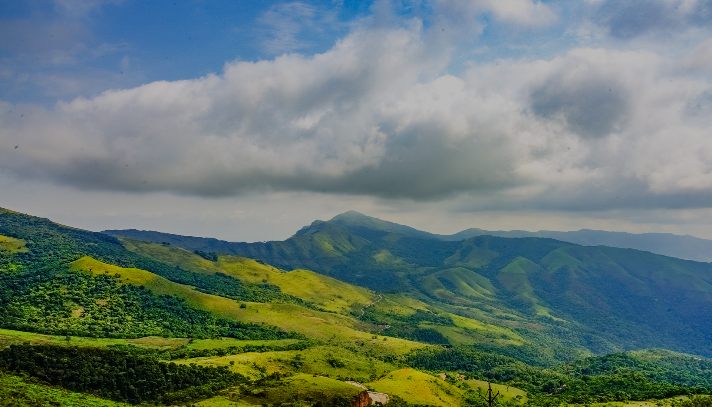
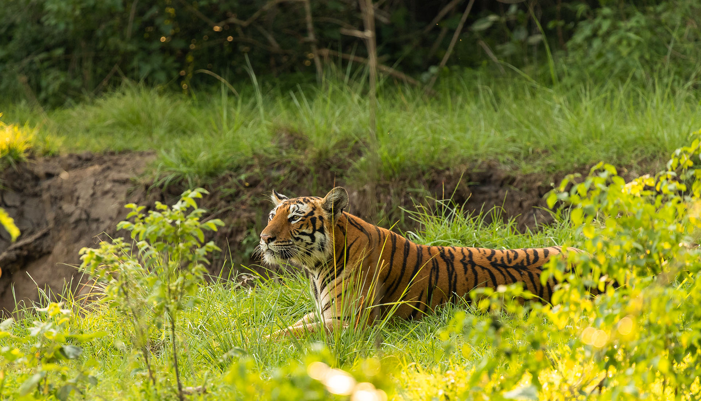
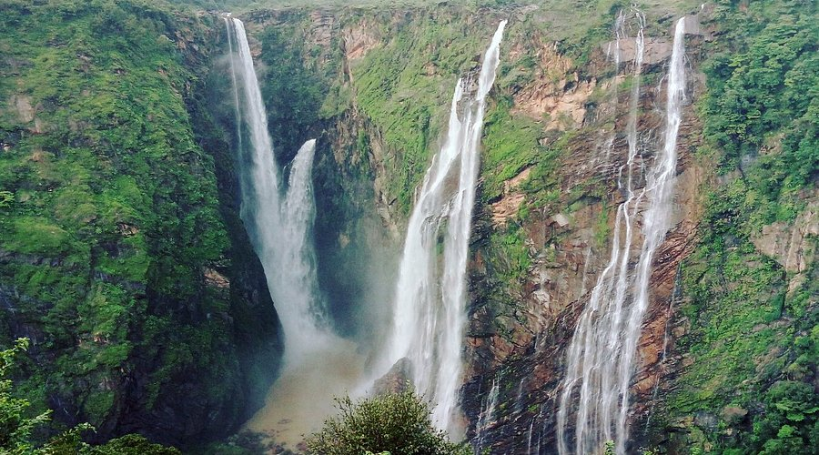
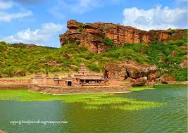
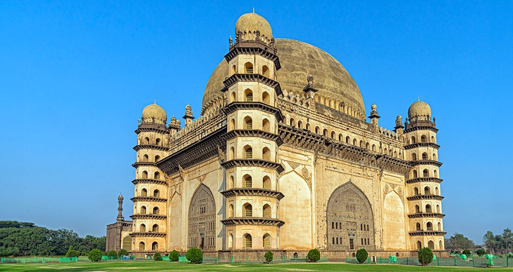

The Tourists' Favourites
-
 Mysuru
Mysuru
Mysuru, Karnataka's cultural capital, is known for its royal heritage, palaces, and the annual Dasara festival. Located at the foothills of Chamundi Hills, it offers a blend of history and culture.
Learn More -

Kodagu
Kodagu, also known as Coorg, is a rural district in the southwest Indian state of Karnataka. In the area's north, Madikeri Fort has 2 life-size elephant statues at its entrance, plus a Gothic-style church with a museum on its grounds.
Learn More -

Hampi
Hampi is an ancient village in the south Indian state of Karnataka. It's dotted with numerous ruined temple complexes from the Vijayanagara Empire. On the south bank of the River Tungabhadra is the 7th-century Hindu Virupaksha Temple, near the revived Hampi Bazaar.
Learn More -

Chikkamagaluru
Chikkamagaluru is a hill station in Karnataka, a state in southwest India. To the north is Baba Budangiri, a mountain range in the Western Ghats, with 3 large caves said to be holy. Trails through forests and grasslands lead up to Mullayanagiri Peak.
Learn More -
 Gokarna
Gokarna
Gokarna is a town on the Arabian Sea, in the southwestern Indian state of Karnataka. A popular pilgrimage destination for Hindus, it's known for sacred sites like Mahabaleshwar Temple, which has a shrine dedicated to the deity Shiva.
Learn More -

Bandipur National Park
Bandipur National Park is one of India's best known sanctuaries located in the Chamarajanagar district of southern Karnataka. It was once the hunting grounds of the Maharaja of Mysore.
Learn More -
Jog Falls

Jog Falls is created by the Sharavathi River dropping 253 m, making it the second-highest plunge waterfall in India after the Nohkalikai Falls with a drop of 335 m in Meghalaya.
Learn More -

Badami
Badami, formerly known as Vatapi, is a town and headquarters of a taluk by the same name, in the Bagalkot district of Karnataka, India. It was the regal capital of the Badami Chalukyas from 540 to 757 AD.
Learn More -

Vijayapura
Vijayapura, formerly Bijapur, is the district headquarters of Bijapur District of Karnataka state. It is also the headquarters for Bijapur Taluka. Bijapur city is well known for its historical monuments of architectural importance built during the rule of the Adil Shahi dynasty.
Learn More -
 Belur and Halebidu
Belur and Halebidu
Belur and Halebidu are two small towns in Hassan district of Karnataka. They are famous for their temples built during the Hoysala Empire. The Chennakeshava Temple in Belur and the Hoysaleswara Temple in Halebidu are the most famous temples in the region.
Learn More